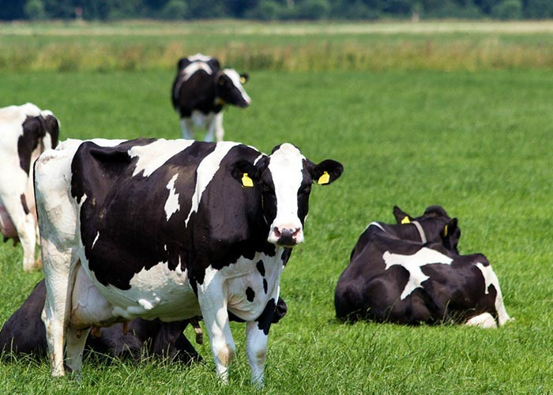
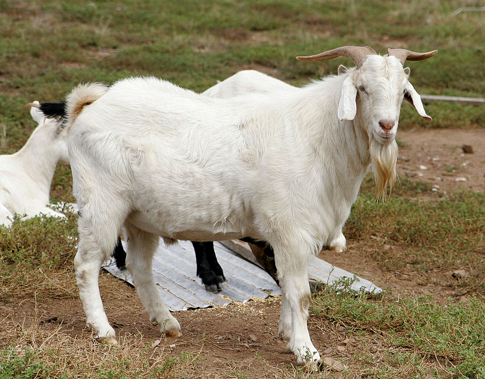

Cow is a domestic female animal from which we get nutritious milk and variety of dairy products. In Hinduism, cow has various religious significance and worshipped by the Hindu people in India.Cow is our mother. It is a most important domestic animal. It gives us a very healthy and nutritious food called milk. It is a pet animal and many people keep her in their houses for many purposes. It is not a wild animal and found in many parts of the world. Everyone gives respect to the cow like a mother. Cow is worshiped in India as a goddess from the ancient time. People in India brings her at home as a dhan Lakshmi. Cow is considered as the holiest animal among all the animals. It is found in many varieties differentiating in the shape, size, colour, etc.
The domestic goat (Capra hircus or Capra aegagrus hircus) is a domesticated mammal. It comes from the wild goat. A male goat is called a buck and a castrated goat is called a whether, a female is called a doe. Young goats are called kids. People eat their meat, drink their milk, and use their fur and skin. With goat milk, cheese can be made, along with other dairy products. Some farmers use goats to eat plants the farmers do not want, called weeds. Other times, the goats are used to keep grasses and other plants from getting too tall. The domestic goat has cloven hooves, a long beard on its chin, a short tail that turns up, and horns that grow up from the head in an arc. The hair is straight with a woolly coat under it during winter. Goats have rectangular irises.[1] The domestic goat is about 70-120 cm (28-48 inches). They weigh from 45-54 kg (100-120 lb.). The diet of the domestic goat includes eating grass, leaves, shrubs, root vegetables, and other kinds of plants.[2] Some ranchers use goats to clear brush and unwanted plants from their pastures. Goats living in the desert, where plants are quite hard to find, have been seen climbing trees to get food. Domestic goats are smart and active.They enjoy playing and climbing. They are social animals that live in groups.
